| EDEVIRGES GODOFREDO |
1957-1986 | |
| . | Omir F. França | 1957 |
| . | Tolentina O. de Souza | 1957-1965 |
| . | Zilá G. Martins | 1957-1961 |
| . | Erony R. Oliveira | 1958-1961 |
| . | DALILA SERPA SANTINI | 1959 |
| . | ZULMÉIA R. MÜLLER | 1959-1962 |
|
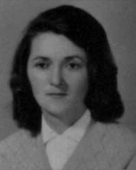 |
DANUTA DUNIN | 1960-1972 |
| . | CLEOSINA SLIVAK | 1962 |
| . | JORGE JEAN BRUEL | 1962 |
| . | ELIZABETH G. MORO | 1962-1963 |
| ACYR LOURES PACHECO | 1962-1963 | |
| . | Welington B. Moreira | 1962-1964 |
| . | Syrton Loures Martins | 1963-1966 |
| JUDITH O. GAVANSKI |
1964-1966 1968-1970 | |
| . | SYLVANIRA A. S. LINS | 1964-1965 |
| POLAN DUNIN | 1964-1965 | |
| . | ENEDINO BRUM | 1964-1965 |
| . | GERALDO MAGELLA | 1964 |
| . | LUCIANA A. MAGELLA | 1965-1966 |
| LIA MAURA S. MARTINS | 1965-1971 | |
| . | BENEDITO VITOR DOS SANTOS | 1965 |
| . | MIRATÃ ALVES FAGUNDES | 1965 |
| . | LÍDIA B. BECHARA | 1966 |
| . | AUGUSTINHO ORMENESSE | 1966 |
| . | MURILO WALTER TEIXEIRA | 1966-1967 |
| . | HAROLDO O. SANTOS | 1966 |
| Pe. THEODORUS PETRUS BRUIN | 1966 | |
|
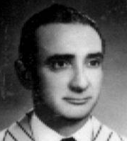 |
KLEBER ALVES CHAGAS | 1966-1971 |
| INOCENTE JOÃO FURLAN | 1966-1974 | |
| ADAIR VALENÇA SOARES | 1966-1973 | |
| JOSÉ KLUTCHOWSKI | 1966-1968 | |
|
. |
MARCIAL A. PORTILHO | 1966 |
| PEDRO GORTE | 1966 | |
| JAIR ANTONIO CALASSA | 1967-1963 | |
| DIVAL LAERTES SARDÁ | 1967 | |
| MANOEL JOAQUIM MADRUGA | 1967-1970 | |
|
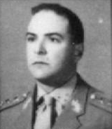 |
RAUL MUNHOZ MOURA | 1967 |
|
. |
ISMAEL VELOSO | 1968 |
|
|
MARILDA L. PENTEADO | 1968-1970 |
| . | LIANE MARTA DA COSTA | 1968-1971 |
| . | EDÉSIO S. COUTRIN | 1968 |
| . | ACYR RICKLI | 1969-1971 |
| . | JOÃO JORGE DOS SANTOS | 1969-1970 |
| . | FRANCISCO S. LIMA | 1969-1970 |
| . | JOSÉ ANTONIO CAROLLO | 1970 |
| . | AURÉLIA M. BARCK | 1970 |
|
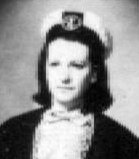 |
JANDIRA GALLERA | 1970 |
|
. |
ROBERTO A CRODA | 1970-1971 |
|
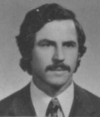 |
ADELINO BRIDI | 1970-1976 |
|
. |
JACY L. BARBOSA | 1970 |
| ALCIDES A. DE MATOS | 1971-1973 | |
| JOÃO FIRAK | 1971-1972 | |
| TÂNIA MARIA GARCIA | 1971 | |
| ELIZA AMÉLIA MOSSE | 1971 | |
| . | GERALDO NEI T. CAMARGO | 1971-1973 |
| . | HERCÍLIO MELBRATZ | 1971-1972 |
|
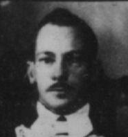 |
AFONSO L. LACERDA | 1971 |
| . | DILCELÉIA M. SCHAFFEL | 1971 |
| . | GERUSA B. LACERDA | 1971 |
| . | GILSON R. AGGOTONI | 1971 |
| HENRIQUE PUGEL FILHO | 1971-1972 | |
|
. |
JOSÉ JOEL DA SILVA | 1971 |
| JOÃO MOLIANI | 1972 | |
|
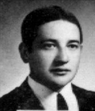 |
JOÃO MARIA ALVES | 1972 |
| LENÍ A. L. CÚNICO | 1972-1974 | |
|
. |
ROMEU R. DE BRUNS | 1972 |
| MOACIR MÜLLER | 1972 | |
| FRANCISCO DA SILVA | 1972 | |
| JOSÉ HOEPERS | 1972 | |
 |
RAFAEL HUMINISKI | 1972 |
|
. |
ARY MAURO JUCHEM | 1972 |
| LUIZ MOURÃO | 1972-1973 | |
|
. |
CRISTIANO BUCH FILHO | 1973-1974 |
| IGNÁCIO XAVIER | 1973 | |
| SEBASTIÃO GAMA MACHADO | 1973-1975 | |
| NOÉ WROBEL | 1974 | |
| MARLENE LUIZ KAISER | 1974 | |
|
|
LUIZ R. KRAMER | 1974 |
| . | RAIMUNDO M. DIAS | 1974-1975 |
| . | MARIA DA LUZ SILVEIRA | 1974 |
| CELSO LUIZ FRACARO | 1975 | |
| ALENCAR LEITE AGNER | 1975 | |
| . | DIOGO P. DOS SANTOS | 1975 |
| . | ARNALDO IURK | 1975 |
|
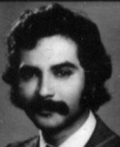 |
THAIRSON M. SILVA | 1975 |
| IRACI M. GAVINO | 1975 | |
|
. |
OLGA SINDELAR | 1976 |
| VERA MELI DOMINGUES | 1976-1981 | |
| . | HELIO LIBER LOPES | 1976 |
| . | WALTZER DONINI | 1976 |
| . | ZENO A. ALBERT | 1976 |
|
. |
LIANE L. MACHADO | 1976-1978 |
| LUIZ FERNANDES DE PAULA | 1976-1983 | |
| . | ALUÍZIO PACHECO | 1976 |
| . | HEWTON B. FERREIRA | 1976 |
| . | CIRCE COLLEONE COSTA | 1977 |
| . | VERA LÚCIA BICHOF | 1977 |
| . | LIANE E. COLODEL | 1977-1978 |
| ALACIR VALENÇA SOARES | 1977-2003 | |
|
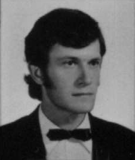 |
ADEMIR FABIANE |
1977-1978 |
|
. |
GENI COLODEL | 1977-1978 |
| . | JOSÉ AUGUSTO ALBAS | 1977-1980 |
| . | RONI A. GARCIA | 1977 |
| . | ODILON S MACHADO | 1977-1978 |
| . | JOÃO HENRIQUE DOMINGUES | 1977 |
| . | MARIA CLECI CAMPANINI | 1978 |
| JOSÉ NILTON CABEÇO | 1979 | |
| PAULO JORGE RIEHS |
1979-1981 1985 | |
| NILTON JOSÉ CARRARO |
1979 1988-1994 | |
| JEANETE ROSKOWSKI | 1979-1981 | |
|
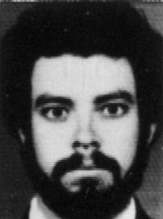 |
JOÃO SOARES ROSA | 1980 |
| ARIODARI F. DOS SANTOS | 1980-1999 | |
|
|
REJANE MARIA S. ROCHA | 1980 |
| MARIO A. GRANDE | 1980 | |
|
. |
RENI BORAZZO | 1981-1982 |
|
GILDO W. GÓRSKI |
1981-2002 | |
| 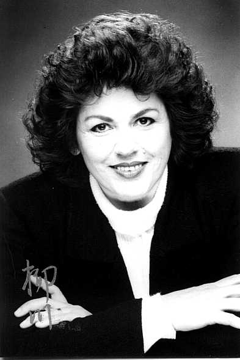 | MARIA ALBANY DA COSTA | 1982 |
| OLINDA TOKARSKI | 1982-2003 | |
| CARLOS EDUARDO SCHIPANSKI | 1982-1987 | |
| AFONSO R. DA SILVA | 1983-1984 | |
| MANOEL S.S. VARELLA |
1983-1984 1994-2001 | |
|
MARIA APARECIDA C. S. MACIEL |
1985-1986 2001-2003 | |
| VITOR HUGO OSSOSKI | 1985-1994 | |
| FRANCISCO GELINSKI NETO | 1985-1987 | |
 |
DENISE P. FRÁGUAS | 1987-1990 |
| ROSÂNGELA R. BACELLAR | 1987 | |
| ROSANA DE FÁTIMA MÜLLER | 1987-1997 | |
|
. |
ROSANA VIOMAR DE LIMA | 1987 |
 |
ANA MARIA VUICIK | 1988-1989 |
|
. |
DARLY T. PAWLINA FONSECA | 1988-1993 |
| OSÓRIO PAWLINA DA FONSECA | 1988-1993 | |
| LUIZ FERNANDO PACHECO | 1988-1990 | |
| CLAUDIO JOÃO SILVESTRI | 1988-1989 | |
| ARIOMAR R. DOS SANTOS | 1988-1989 | |
| LUIZ GILBERTO BERTOTTI | 1988-1998 | |
| . | MÁRCIO AURÉLIO CALDAS | 1989-1990 |
| . | JOSÉ VALDIR KUKELCIK | 1989-1990 |
| VERSIONE DE SOUZA | 1989-1992 | |
| CARMEM LUCIA CARRARO | 1989-1990 | |
| GILBERTO FRANCO DE SOUZA | 1989 | |
| . | JOÃO GERALDO DE GOES | 1989 |
| . | ANTONIO CARLOS R. BURKO | 1990 |
| . | HELIO PEREIRA DE LIMA | 1990 |
| . | IVONILDA TEREZINHA CORREA | 1990 |
| LUCIANA R. R. MONTEIRO | 1990-1998 | |
|
. |
NIVALDO S. BARRETO | 1990 |
| CHRISTINE VARGAS LIMA | 1990 | |
|
. |
CIRLENE MOLIANI | 1991 |
| JOSÉ SINVAL SOARES GONÇALVES | 1991-1998 | |
| MARINA CHAGAS | 1991-1994 | |
| JULIANO CORDEIRO | 1992 | |
| LAIS HELENA F. RECCANELLO | 1992-2003 | |
|
. |
LUCINDA NEVES | 1992 |
| ROSIDETE T. FABIANE | 1992-1994 | |
| JAQUELINE JOHN ACHTERBERG | 1992-1993 | |
| SOELY APARECIDA ANNES | 1992-1997 | |
|
. |
EGLECY LIPEMAN | 1992 |
| VALÉRIO DE SOUZA PINTO | 1992 | |
| SUZETE T. ORZECHOWSKI | 1992-1997 | |
|
. |
ABELARDO MAZUTTI | 1993 |
| CARLOS ROBERTO VARGAS | 1993 | |
| LUIS CESAR NADAL |
1993 2001-2003 | |
| JEFERSON FERST VIEIRA | 1993 | |
| . | SIMONE SANTI | 1993-1994 |
| . | THAÍSA NADAL | 1993 |
| . | MARISTELA HILLSHEIM | 1993 |
| . | FÁBIO ROBERTO VICENTIM | 1993-1994 |
| OCIMAR J. DALA ROSA | 1993-1994 | |
| CESAR VALLERA | 1993-1994 | |
|
. |
LUIS T. BULKOVSKI | 1993 |
| ANDRÉ LUIZ COSTA | 1994 | |
| EDUARDO PATELA TRAVERSI | 1994 | |
| VANDERLEI F. DOS SANTOS | 1994-1998 | |
| SÉRGIO FERNANDO PACZKOSKI | 1994-1995 | |
| ISMI S. C. FINGER | 1995-1998 | |
| JUSSARA MARIA SPEGEL | 1995-1997 | |
| MARCIA R. NOVACKOSKI | 1995-1997 | |
| LETICIA AGUIAR | 1998-2000 | |
| MAURO SÉRGIO SOARES GONÇALVES | 1999-2003 | |
| ANTENOR FORNAZARI NETO | 1999-2000 | |
| MARCIO RICKLI | 1999-2002 | |
| CELSO ROLOF | 1999-2003 | |
| JOSEMARI A SOARES | 1999-2003 | |
|
. |
MAURO RIBEIRO | 2000-2001 |
| GERSON HUCHAK | 2001-2003 | |
 |
ALESSANDRA KURTA | 2001-2003 |
| SILMARA RESSAI | 2001-2003 | |
| IRAJÁ COSMALA | 2002-2003 | |
 |
CÂNDIDA ROSÉLIA DOS SANTOS | 2002-2003 |
| MARCELO WALTER ANTONIO | 2002-2003 | |
 |
LUCIANA P. BARBOSA | 2002-2003 |
| ROSELENE WAPECHOWSKI | 2002-2003 |